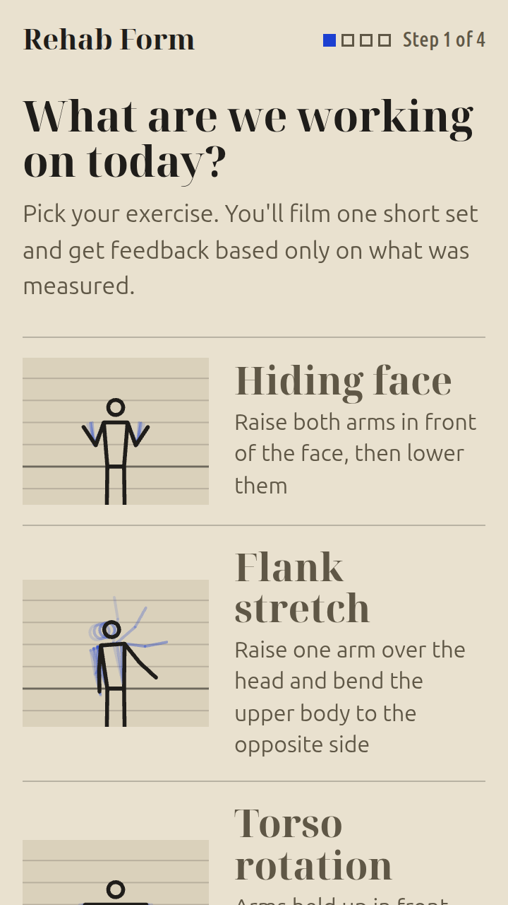
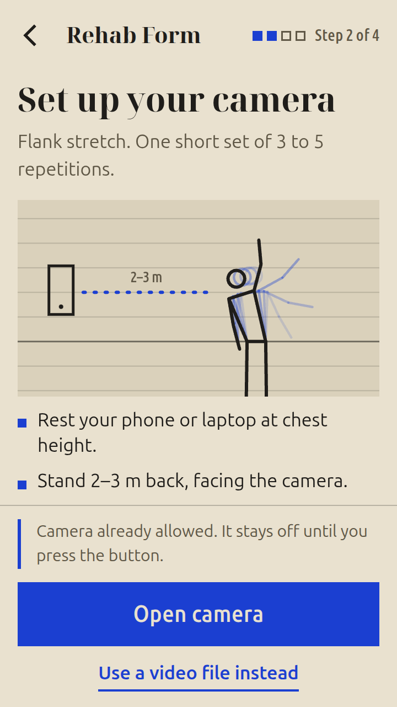
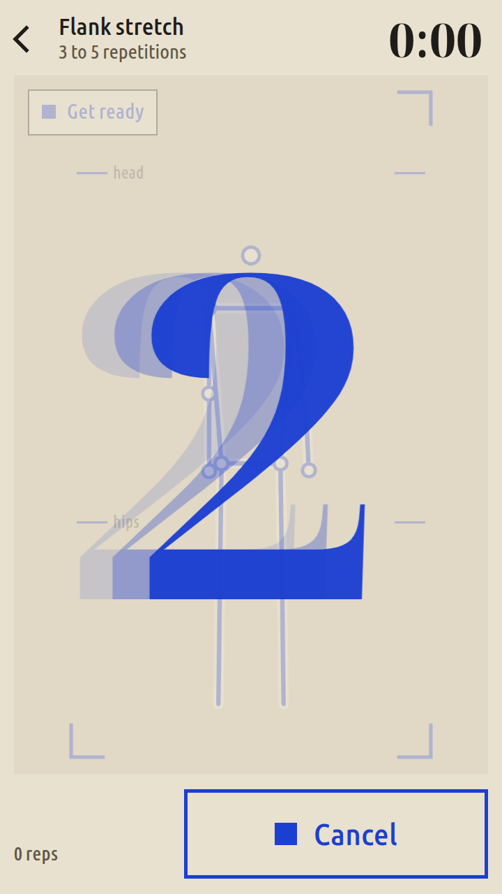
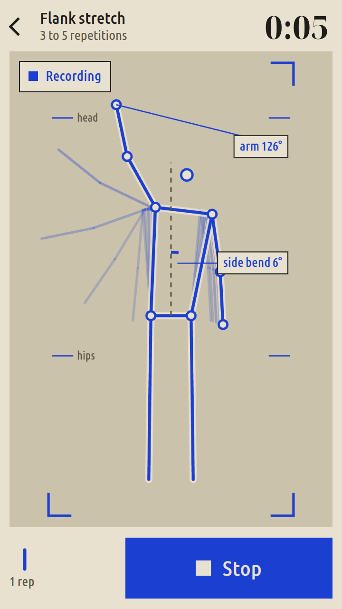
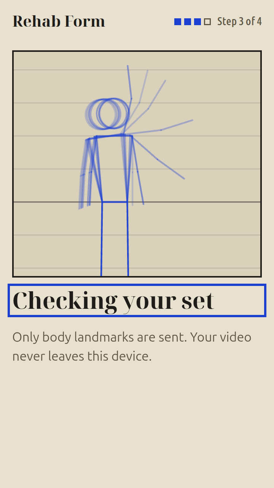
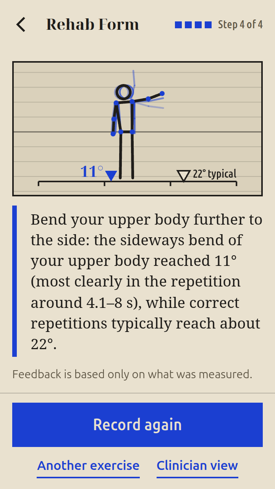
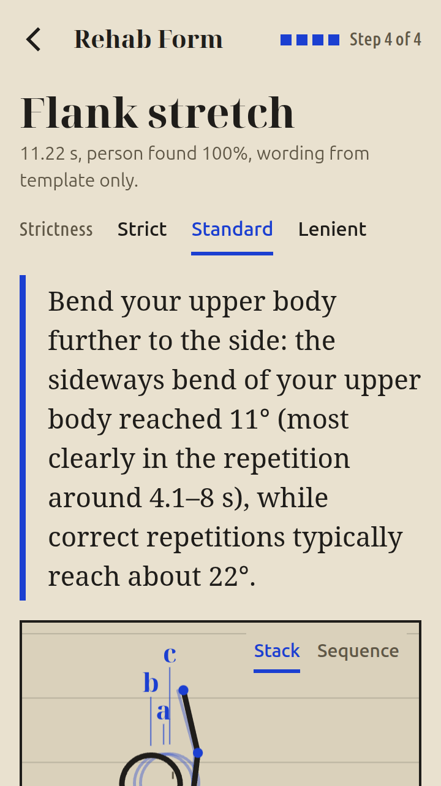
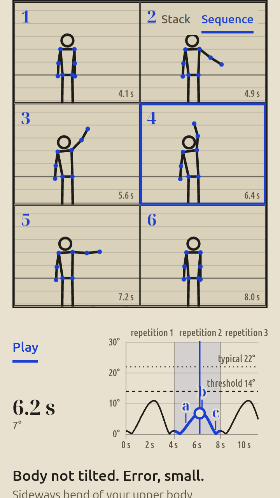
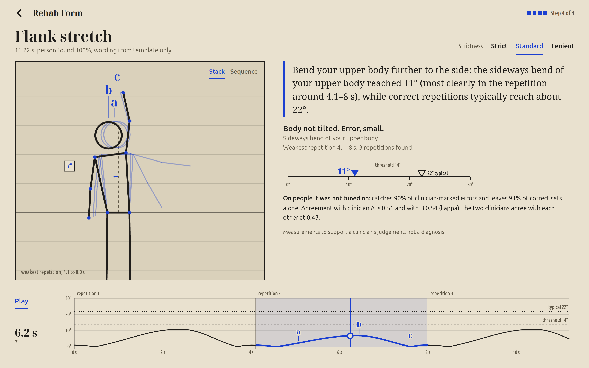
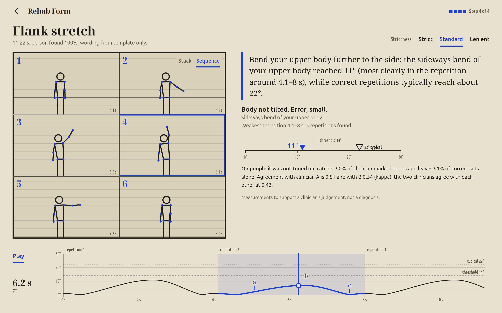

Phone 360 x 640: the flow

1 Choose: figures perform their exercise

2 Set up: animated demo, waits for you

Countdown with time echo

3 Recording: strobe trail and callouts

Checking: your plate develops

4 Result: your own set, ruler, the sentence
Clinician

Phone
Phone, Sequence

Desktop, Stack (Marey)
Desktop, Sequence (Muybridge)